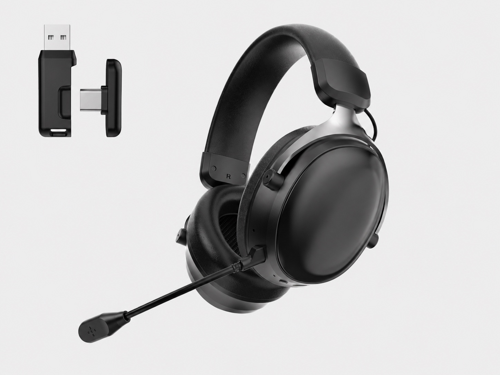

Production activity
The G935 assembly footage shows selected workshop activity. It is not a G935 performance test, factory-capacity audit or proof that every production step is shown.

OEM supplier checklist
The cheapest headset quote may leave out the receiver, the printed box or the microphone you expected. Before choosing an OEM gaming headset supplier, compare the same version and ask for evidence behind each promise.

Supplier comparison
Use the same questions for every shortlisted supplier. Save the supplier name, model/version, reply date and evidence link beside each answer. Start with Not confirmed; use Needs revision for a mismatch and Confirmed for this version only after review. This is a proposed review method, not a completed TALRIVO assessment.
| Check | Ask for | Pause the decision if |
|---|---|---|
| 1. Company and production | Legal company name, production location, assembly/inspection responsibility and dated workshop references. | The seller, production role or person responsible for your sample is unclear. |
| 2. Exact sample version | Model code, wired/wireless version, revision, dated photos and the configuration the quote refers to. | The quote, photos and physical sample refer to different versions. |
| 3. Device and connection | Device/OS, receiver or cable type, and playback, microphone, pairing and reconnection results by mode. | A device logo or USB-C connector is the only compatibility evidence. |
| 4. Microphone and fit | A voice recording with the test setup stated; review boom position, cushions, clamp and fit on your sample. | Promotional artwork is presented as proof of voice quality or long-session comfort. |
| 5. Included accessories | A written packing list separating included, optional and excluded receivers, adapters, cables, microphones and printed materials. | Items appear in a picture but their inclusion and price are not confirmed. |
| 6. Customization | Logo location, color, packaging/manual language, artwork approval and any tooling or setup charges. | The available work, approved artwork or cost of a requested change is unclear. |
| 7. Document matching | Original files with company, model list and dates; check configuration, report scope and destination requirements. | The offered model is absent or changes to the documented configuration remain unresolved. |
| 8. Written quote scope | Configuration, quantity/MOQ, currency, delivery terms, validity, timing and separately charged sample, setup or freight costs. | You cannot tell whether two prices cover the same product and services. |
A common comparison trap
For example, one offer might include a USB receiver, USB-C adapter, charging cable and printed box; another might cover only the headset. Neither is automatically the better offer. First agree the same packing list, configuration, quantity and delivery terms, then compare the total quoted scope. This is an illustrative example, not a TALRIVO price or standard packing list.
Use the quote comparison checklist for commercial terms and the packing-list checklist for included items. This page does not publish a universal MOQ, sample charge or lead time.
Check our references
The G935 assembly footage shows selected workshop activity. It is not a G935 performance test, factory-capacity audit or proof that every production step is shown.
The G938 phone setup demo shows receiver setup and physical controls. Completed Bluetooth pairing is not clearly visible; it does not prove compatibility with every phone or measure latency.
The original document comparison identifies Nanrui as the named company. G936 is not listed in those two documents; a listed code alone does not establish coverage for a changed configuration.
For your own sample, record the version and results in the blank sample review worksheet. Untested items should remain Not tested, not be marked as passed.
FAQ
Compare company and production responsibility, the exact sample version, device and connection results, microphone and fit, included accessories, customization scope, document matching and written quote terms. Record missing evidence as Not confirmed rather than treating it as a pass.
Request the legal company name, production location, who handles assembly and inspection, dated workshop references and the person responsible for your sample. Workshop footage shows selected activity; it does not establish capacity, every production stage or the quality of a shipment.
No. Compare the same configuration, quantity, accessory list, packaging, customization work, currency and delivery terms first. A headset-only price and a complete branded set are different offers. Sample, tooling, freight and other separate charges need written confirmation.
No. A photo does not establish microphone quality, latency, battery life or included accessories. Match documents to the named company, model and selected configuration, then check destination requirements. A listed model code alone does not prove that a changed configuration is covered.
Include the model and version, target country, sales channel, target devices, quantity range, branding, packing list, manual language, document questions and required sample timing. Ask the supplier to identify exclusions, separate charges and unresolved items in writing.
Related TALRIVO pages
The broader manufacturer guide covers factory evidence, sample checks and supplier shortlist logic.
Move from an identified sample to written changes and approval without assuming a fixed sample or shipping lead time.
Compare current TALRIVO model directions before choosing the final sample shortlist.
Send the model or product link, target country, quantity range and the unresolved question. Ask about an accessory, connection setup or document before preparing a full RFQ.